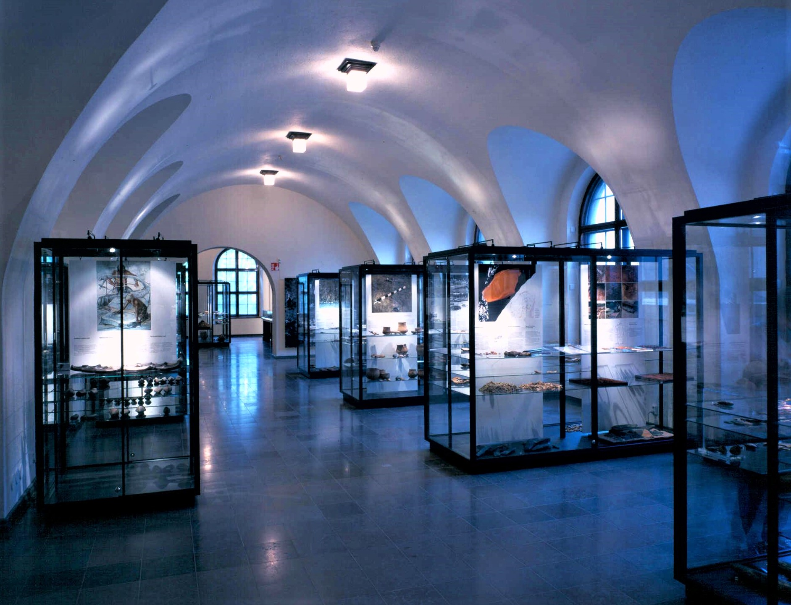
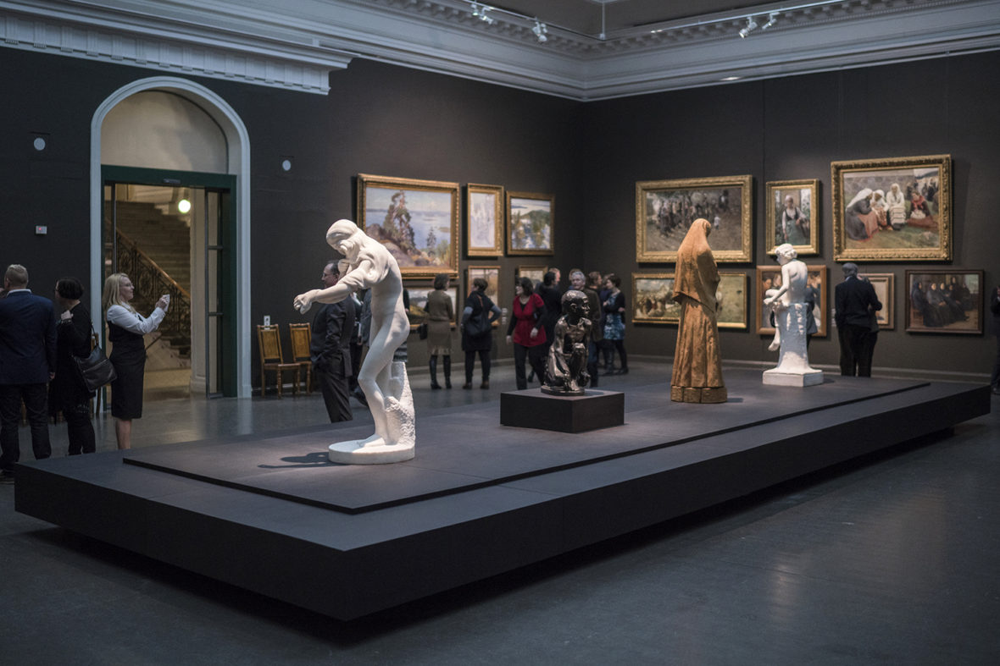
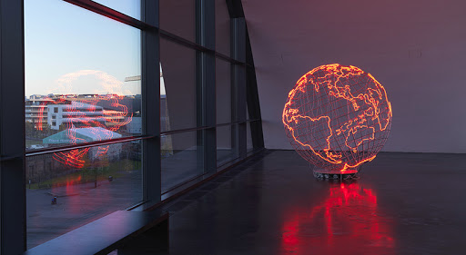
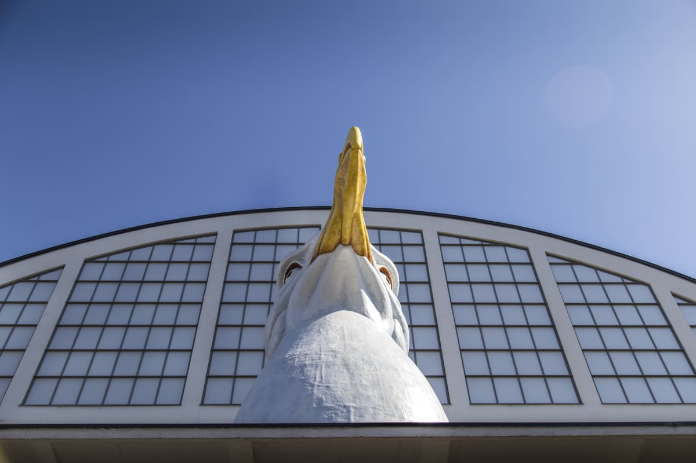
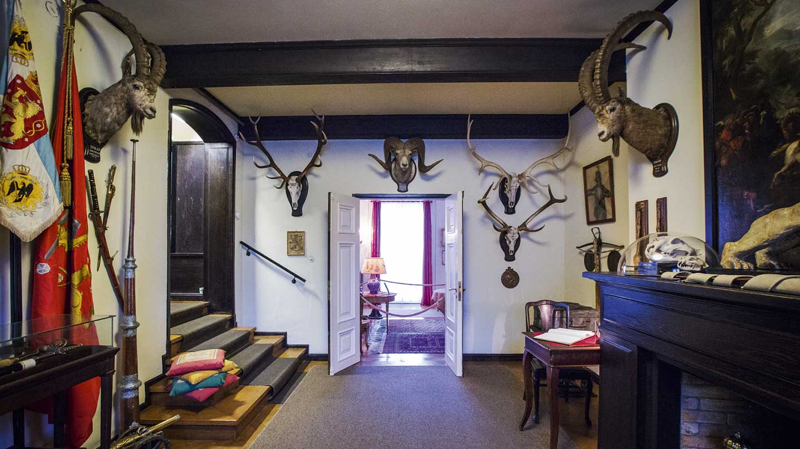

Museums
The Museum of Natural History

"The Museum of Natural History in Helsinki dives under the surface of the Baltic Sea and screams frosty snow, terrifying uninvited guests at home, pondering evolutionary achievements, marveling at the skeleton collection and marveling at the world's biodiversity."
See here for more!The Finnish National Museum
"The Finnish National Museum is an oasis of culture and history in the heart of Helsinki."
See here for more!Suomenlinna Toy Museum

"We introduce you to a private collection of old toys from the 1830s Until the collapse of the Soviet Union. Our collection includes antique and vintage toys, such as dolls, tin toys, teddy bears, dollhouses and other retirees in the toy world."
See here for more!Ateneum
"The Ateneum is the most famous art museum in Finland and the home of Finnish art. Our images are embroidered in the common memory of Finns: our beloved collections cover an era from the 19th century to modern."
See here for moreAmos Rex

"The connection between the past and the present created a fascinating starting point for the design of the new museum. The entrance to the new Art Museum is located in the Glass Palace of the last century with lobbies, administrative workspaces and a cinema Bio Rex."
See here for more!Kiasma
"Kiasma is a museum of contemporary art in the center of Helsinki and part of the National Gallery. Kiasma celebrates and collects the art of our time - what artists do right now."
See here for more!HAM
"Helsinki Art Museum HAM takes care of Helsinki's own art collection, which includes over 9,000 books. Almost half of the collection is in Ilona parks, streets, agencies, health centers, schools and libraries."
See here for more!Gallen Kallela Museum

"Tarvaspää, designed and built by artist Akseli Gallen-Kallela (1865-1931). The studio castle was opened to the public in 1961 as the Gallen-Kallela Museum."
See here for more!Alvar Aalto's studio

"The beautiful home of Alvar Aalto, designed for the architectural family in Munkkiniemi, Helsinki, and the studio of Alvar Aalto, served as a bright architectural office, are open to the public on guided tours throughout the year."
See here for more!Mannerheim Museum
"Marshal of Finland, Baroness Gustaf Mannerheim (1867-1951) lived in Kaivopuisto in the villa from 1924 to 51. The villa has been operating since 1951 in his life and in Finland as a history museum. The home has been retained in its original appearance, with the exception of a few rooms that have been converted into showrooms."
See here for more!Villa Gyllenberg

"The Villa Gyllenberg Museum of Home and Art is located in a beautiful natural environment on Kuusisaari in Helsinki. An art collector's home, built in the mid-20th century, opens to visitors in an atmospheric old villa."
See here for more!University of Helsinki Observatory

"Designed by architect C. L. Engel in collaboration with Professor F. W. A. Argelander, the Observatory completed in 1834 is now housed in the Helsinki University Museum as an Astronomy Audience Center."
See here for more!